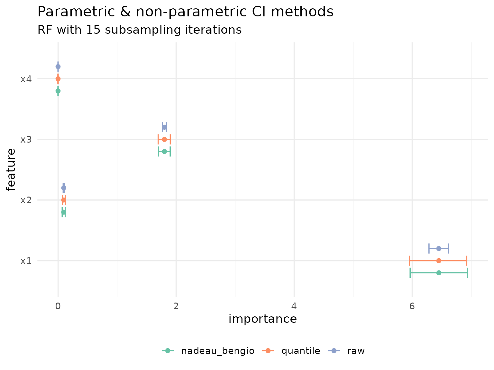
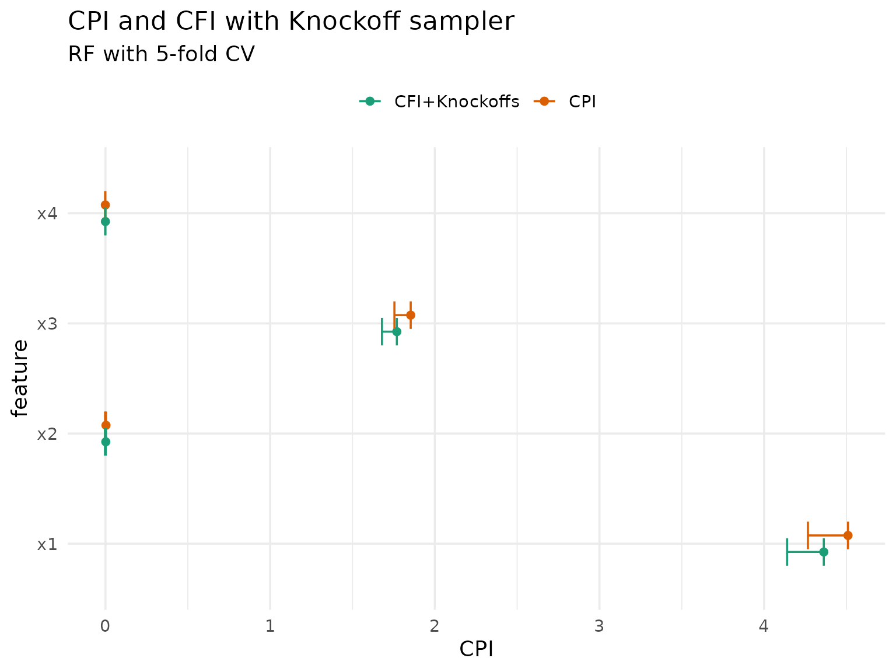
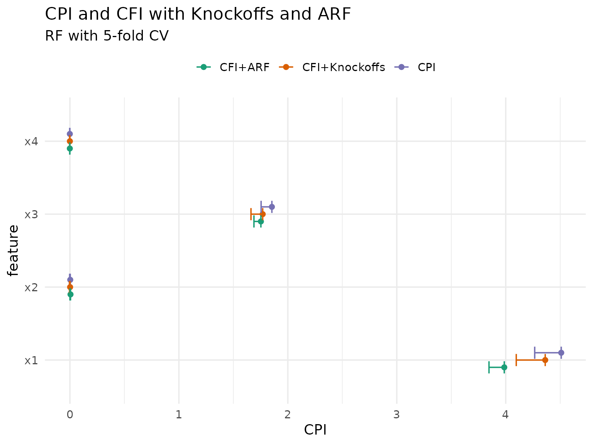
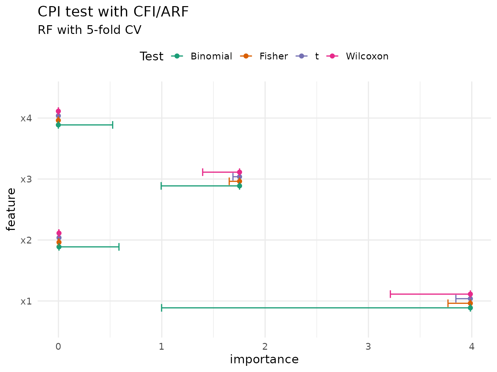

library(xplainfi)
library(mlr3learners)
#> Loading required package: mlr3
library(data.table)
library(ggplot2)There are multiple inference methods available for different importance methods and estimation targets. The approaches fall into two broad categories:
Resampling-based variability: When importance is estimated via resampling (e.g., subsampling), we obtain multiple importance estimates across iterations. We can summarize this variability descriptively (empirical quantiles), or use parametric methods, either naive (raw CIs) or corrected for the dependence structure of resampling (Nadeau & Bengio).
Observation-wise inference on test data: When a dedicated test set with i.i.d. observations is available (e.g., holdout), we can use observation-wise loss differences for formal statistical inference. This is the basis for CPI/cARFi (conditional importance) and the Lei et al. method (LOCO inference).
Setup
We use a simple linear DGP for demonstration purposes where
- \(X_1\) and \(X_2\) are strongly correlated (r = 0.7)
- \(X_1\) and \(X_3\) have an effect on Y
- \(X_2\) and \(X_4\) don’t have an effect
task = sim_dgp_correlated(n = 2000, r = 0.7)
learner = lrn("regr.ranger", num.trees = 500)
measure = msr("regr.mse")DAG for correlated features DGP
Resampling-based variability
When we compute feature importance with resampling — for example,
subsampling with multiple repeats — each resampling iteration yields a
separate importance estimate. By default, $importance()
simply averages these estimates without reporting any measure of
variability:
pfi = PFI$new(
task = task,
learner = learner,
resampling = rsmp("subsampling", repeats = 15),
measure = measure,
n_repeats = 20 # for stability within resampling iters
)
pfi$compute()
pfi$importance()
#> Key: <feature>
#> feature importance
#> <char> <num>
#> 1: x1 6.476555494
#> 2: x2 0.095842584
#> 3: x3 1.793989195
#> 4: x4 -0.000962437There are several ways to quantify the variability of these estimates, ranging from purely descriptive to parametric inference.
Empirical quantiles
The simplest approach is to look at the empirical distribution of importance scores across resampling iterations. This is not a formal inference method — it merely describes the observed variability without any distributional assumptions.
The "quantile" method returns only confidence bounds
(conf_lower, conf_upper) without
se, statistic, or p.value, since
empirical quantiles are not a statistical test. The conf_*
naming is kept for consistency with other methods to ease
visualization.
pfi_ci_quantile = pfi$importance(ci_method = "quantile", alternative = "two.sided")
pfi_ci_quantile
#> Key: <feature>
#> feature importance conf_lower conf_upper
#> <char> <num> <num> <num>
#> 1: x1 6.476555494 6.108602488 6.8752121255
#> 2: x2 0.095842584 0.071144370 0.1213703258
#> 3: x3 1.793989195 1.736434146 1.8848348302
#> 4: x4 -0.000962437 -0.003342628 0.0006686405Raw confidence intervals
A natural next step is to assume the importance scores are approximately normally distributed across resampling iterations and compute t-based confidence intervals. However, these unadjusted confidence intervals are too narrow and hence invalid for inference: the resampling iterations share overlapping training sets, violating the independence assumption underlying the t-distribution.
pfi_ci_raw = pfi$importance(ci_method = "raw", alternative = "two.sided")
pfi_ci_raw
#> Key: <feature>
#> feature importance se statistic p.value conf_lower
#> <char> <num> <num> <num> <num> <num>
#> 1: x1 6.476555494 0.0707450088 91.547879 7.519530e-21 6.32482254
#> 2: x2 0.095842584 0.0042155496 22.735490 1.879277e-12 0.08680113
#> 3: x3 1.793989195 0.0132950768 134.936355 3.311520e-23 1.76547409
#> 4: x4 -0.000962437 0.0002849623 -3.377418 4.511052e-03 -0.00157362
#> conf_upper
#> <num>
#> 1: 6.6282884472
#> 2: 0.1048840389
#> 3: 1.8225042988
#> 4: -0.0003512536The parametric CI methods ("raw" and
"nadeau_bengio") return se,
statistic, p.value, conf_lower,
and conf_upper. The alternative parameter
controls whether a one-sided test ("greater", the default,
testing H0: importance <= 0) or two-sided test
("two.sided") is performed. Here we use
alternative = "two.sided" for visualization purposes so
that conf_upper is finite.
Corrected t-test (Nadeau & Bengio)
To account for the dependence between resampling iterations, we can use the correction proposed by Nadeau & Bengio (2003) and recommended by Molnar et al. (2023). This inflates the variance estimate to account for the overlap between training sets, yielding wider (and more honest) confidence intervals:
pfi_ci_corrected = pfi$importance(ci_method = "nadeau_bengio", alternative = "two.sided")
pfi_ci_corrected
#> Key: <feature>
#> feature importance se statistic p.value conf_lower
#> <char> <num> <num> <num> <num> <num>
#> 1: x1 6.476555494 0.2063236235 31.390276 2.231930e-14 6.034035333
#> 2: x2 0.095842584 0.0122944003 7.795629 1.848448e-06 0.069473718
#> 3: x3 1.793989195 0.0387743032 46.267477 1.027030e-16 1.710826586
#> 4: x4 -0.000962437 0.0008310757 -1.158062 2.662136e-01 -0.002744917
#> conf_upper
#> <num>
#> 1: 6.9190756552
#> 2: 0.1222114505
#> 3: 1.8771518043
#> 4: 0.0008200431The Nadeau-Bengio correction provides better (but still imperfect) coverage compared to the raw approach.
Comparison
To highlight the differences between all three approaches, we visualize them side by side:
pfi_cis = rbindlist(
list(
pfi_ci_raw[, type := "raw"],
pfi_ci_corrected[, type := "nadeau_bengio"],
pfi_ci_quantile[, type := "quantile"]
),
fill = TRUE
)
ggplot(pfi_cis, aes(y = feature, color = type)) +
geom_errorbar(
aes(xmin = conf_lower, xmax = conf_upper),
position = position_dodge(width = 0.6),
width = .5
) +
geom_point(aes(x = importance), position = position_dodge(width = 0.6)) +
scale_color_brewer(palette = "Set2") +
labs(
title = "Parametric & non-parametric CI methods",
subtitle = "RF with 15 subsampling iterations",
color = NULL
) +
theme_minimal(base_size = 14) +
theme(legend.position = "bottom")
The results highlight just how optimistic the unadjusted, raw confidence intervals are.
Multiplicity correction
When testing many features simultaneously, p-values should be adjusted to control the overall error rate. There are two main frameworks for multiplicity correction:
Family-wise error rate (FWER): The probability of making at least one false rejection among all tests. FWER control is the more conservative approach and is appropriate when any single false positive would be costly. Methods include Bonferroni (\(\alpha / k\)) and Holm (a step-down variant that is uniformly more powerful than Bonferroni while still controlling FWER).
False discovery rate (FDR): The expected proportion of false rejections among all rejected hypotheses. FDR control is less conservative and better suited for exploratory analyses where some false positives are tolerable. The most common method is Benjamini-Hochberg (BH).
The p_adjust parameter accepts any method from
stats::p.adjust.methods and defaults to "none"
(no adjustment).
pfi$importance(ci_method = "nadeau_bengio", alternative = "two.sided", p_adjust = "none")
#> Key: <feature>
#> feature importance se statistic p.value conf_lower
#> <char> <num> <num> <num> <num> <num>
#> 1: x1 6.476555494 0.2063236235 31.390276 2.231930e-14 6.034035333
#> 2: x2 0.095842584 0.0122944003 7.795629 1.848448e-06 0.069473718
#> 3: x3 1.793989195 0.0387743032 46.267477 1.027030e-16 1.710826586
#> 4: x4 -0.000962437 0.0008310757 -1.158062 2.662136e-01 -0.002744917
#> conf_upper
#> <num>
#> 1: 6.9190756552
#> 2: 0.1222114505
#> 3: 1.8771518043
#> 4: 0.0008200431With Bonferroni correction (FWER control), both p-values and confidence intervals are adjusted. The confidence intervals use an adjusted significance level of \(\alpha / k\) where \(k\) is the number of features:
pfi$importance(ci_method = "nadeau_bengio", alternative = "two.sided", p_adjust = "bonferroni")
#> Key: <feature>
#> feature importance se statistic p.value conf_lower
#> <char> <num> <num> <num> <num> <num>
#> 1: x1 6.476555494 0.2063236235 31.390276 8.927721e-14 5.885645869
#> 2: x2 0.095842584 0.0122944003 7.795629 7.393792e-06 0.060631495
#> 3: x3 1.793989195 0.0387743032 46.267477 4.108119e-16 1.682939822
#> 4: x4 -0.000962437 0.0008310757 -1.158062 1.000000e+00 -0.003342633
#> conf_upper
#> <num>
#> 1: 7.067465120
#> 2: 0.131053673
#> 3: 1.905038568
#> 4: 0.001417759For sequential or adaptive procedures such as Holm (FWER) or Benjamini-Hochberg (FDR), only p-values are adjusted. These methods do not yield a clean per-comparison \(\alpha\) that could be used for CI construction, so confidence intervals remain at the nominal level:
pfi$importance(ci_method = "nadeau_bengio", alternative = "two.sided", p_adjust = "BH")
#> Key: <feature>
#> feature importance se statistic p.value conf_lower
#> <char> <num> <num> <num> <num> <num>
#> 1: x1 6.476555494 0.2063236235 31.390276 4.463861e-14 6.034035333
#> 2: x2 0.095842584 0.0122944003 7.795629 2.464597e-06 0.069473718
#> 3: x3 1.793989195 0.0387743032 46.267477 4.108119e-16 1.710826586
#> 4: x4 -0.000962437 0.0008310757 -1.158062 2.662136e-01 -0.002744917
#> conf_upper
#> <num>
#> 1: 6.9190756552
#> 2: 0.1222114505
#> 3: 1.8771518043
#> 4: 0.0008200431This applies to all ci_methods that produce p-values
("raw", "nadeau_bengio", "cpi",
"lei").
Observation-wise inference on test data
The resampling-based approaches above quantify variability due to the choice of train/test split. A different approach uses observation-wise loss differences on a test set for formal statistical inference.
The idea is straightforward: for each test observation, we compare the loss with and without a feature (either by perturbing the feature or by retraining the model without it). The resulting per-observation importance scores are i.i.d. under appropriate conditions, enabling standard statistical tests.
Inference is guaranteed to be valid with a single train/test split (holdout), where test observations are truly i.i.d. and the model is fixed. Other resampling strategies may be used but come with caveats (see below).
- CPI / cARFi for conditional feature importance (perturbation-based, model is fixed per resampling iteration)
- Lei et al. for LOCO importance (retraining-based, model is refitted without each feature)
Conditional predictive impact (CPI)
CPI (Conditional Predictive Impact) was introduced by Watson & Wright (2021) for statistical inference with conditional feature importance using knockoffs. Two main approaches are supported:
- CPI with knockoffs: The original method using model-X knockoffs for conditional sampling.
-
cARFi (Blesch et al., 2025): Uses Adversarial
Random Forests for conditional sampling, which works without Gaussian
assumptions and supports mixed data. CPI is originally implemented by the cpi
package. It works with
mlr3and its output on our data looks like this:
cpi_res = cpi(
task = task,
learner = learner,
resampling = resampling,
measure = measure,
test = "t"
)
setDT(cpi_res)
setnames(cpi_res, "Variable", "feature")
cpi_res[, method := "CPI"]
cpi_res
#> feature CPI SE test statistic estimate
#> <char> <num> <num> <char> <num> <num>
#> 1: x1 4.5092929912 0.147978747 t 30.4725717 4.5092929912
#> 2: x2 0.0029567621 0.003362453 t 0.8793467 0.0029567621
#> 3: x3 1.8536055915 0.060102228 t 30.8408797 1.8536055915
#> 4: x4 -0.0008885688 0.000770307 t -1.1535255 -0.0008885688
#> p.value ci.lo method
#> <num> <num> <char>
#> 1: 3.859678e-168 4.265776760 CPI
#> 2: 1.896595e-01 -0.002576545 CPI
#> 3: 1.768282e-171 1.754700388 CPI
#> 4: 8.755837e-01 -0.002156198 CPICPI with knockoffs
Since xplainfi also includes knockoffs via the
KnockoffSampler and the
KnockoffGaussianSampler, the latter implementing the second
order Gaussian knockoffs also used by default in cpi, we
can recreate its results using CFI with the corresponding
sampler.
CFI with a knockoff sampler supports CPI inference
directly via ci_method = "cpi".
knockoff_gaussian = KnockoffGaussianSampler$new(task)
cfi = CFI$new(
task = task,
learner = learner,
resampling = resampling,
measure = measure,
sampler = knockoff_gaussian,
n_repeats = 1 # generate 1 knockoff matrix, like cpi()
)
cfi$compute()
cfi_cpi_res = cfi$importance(ci_method = "cpi")
#> Warning: Observation-wise inference was validated with a single test set.
#> ! Current resampling has 5 iterations.
#> ℹ With cross-validation, models are fit on overlapping training data, which may
#> affect coverage.
#> ℹ With bootstrap or subsampling, test observations are not i.i.d.
#> ℹ See `vignette("inference", package = "xplainfi")` for details.
cfi_cpi_res
#> Key: <feature>
#> feature importance se statistic p.value conf_lower
#> <char> <num> <num> <num> <num> <num>
#> 1: x1 4.362355571 0.1355320358 32.1868962 8.486605e-184 4.139321851
#> 2: x2 0.001742650 0.0029223989 0.5963079 2.755185e-01 -0.003066498
#> 3: x3 1.769344462 0.0548657780 32.2485988 2.290447e-184 1.679056446
#> 4: x4 -0.000470146 0.0009370589 -0.5017251 6.920419e-01 -0.002012185
#> conf_upper
#> <num>
#> 1: Inf
#> 2: Inf
#> 3: Inf
#> 4: Inf
# Rename columns to match cpi package output for comparison
setnames(cfi_cpi_res, c("importance", "conf_lower"), c("CPI", "ci.lo"))
cfi_cpi_res[, method := "CFI+Knockoffs"]The results should be very similar to those computed by
cpi(), so let’s compare them:
rbindlist(list(cpi_res, cfi_cpi_res), fill = TRUE) |>
ggplot(aes(y = feature, x = CPI, color = method)) +
geom_point(position = position_dodge(width = 0.3)) +
geom_errorbar(
aes(xmin = CPI, xmax = ci.lo),
position = position_dodge(width = 0.3),
width = 0.5
) +
scale_color_brewer(palette = "Dark2") +
labs(
title = "CPI and CFI with Knockoff sampler",
subtitle = "RF with 5-fold CV",
color = NULL
) +
theme_minimal(base_size = 14) +
theme(legend.position = "top")
A noteable caveat of the knockoff approach is that they are not readily available for mixed data (with categorical features).
cARFi: CPI with ARF
An alternative is available using ARF as conditional sampler rather than knockoffs. This approach, called cARFi, was introduced by Blesch et al. (2025) and works without Gaussian assumptions:
arf_sampler = ConditionalARFSampler$new(
task = task,
finite_bounds = "local",
min_node_size = 20,
epsilon = 1e-15
)
cfi_arf = CFI$new(
task = task,
learner = learner,
resampling = resampling,
measure = measure,
sampler = arf_sampler
)
cfi_arf$compute()
# CPI inference with ARF sampler (cARFi)
cfi_arf_res = cfi_arf$importance(ci_method = "cpi")
#> Warning: Observation-wise inference was validated with a single test set.
#> ! Current resampling has 5 iterations.
#> ℹ With cross-validation, models are fit on overlapping training data, which may
#> affect coverage.
#> ℹ With bootstrap or subsampling, test observations are not i.i.d.
#> ℹ See `vignette("inference", package = "xplainfi")` for details.
cfi_arf_res
#> Key: <feature>
#> feature importance se statistic p.value conf_lower
#> <char> <num> <num> <num> <num> <num>
#> 1: x1 3.9865071718 0.0715166883 55.742335 0.00000000 3.868818148
#> 2: x2 0.0053611218 0.0025570164 2.096632 0.01807579 0.001153254
#> 3: x3 1.7527732858 0.0325190020 53.899972 0.00000000 1.699259488
#> 4: x4 -0.0009391978 0.0004918991 -1.909330 0.97181872 -0.001748675
#> conf_upper
#> <num>
#> 1: Inf
#> 2: Inf
#> 3: Inf
#> 4: Inf
# Rename columns to match cpi package output for comparison
setnames(cfi_arf_res, c("importance", "conf_lower"), c("CPI", "ci.lo"))
cfi_arf_res[, method := "CFI+ARF"]We can now compare all three methods:
rbindlist(list(cpi_res, cfi_cpi_res, cfi_arf_res), fill = TRUE) |>
ggplot(aes(y = feature, x = CPI, color = method)) +
geom_point(position = position_dodge(width = 0.3)) +
geom_errorbar(
aes(xmin = CPI, xmax = ci.lo),
position = position_dodge(width = 0.3),
width = 0.5
) +
scale_color_brewer(palette = "Dark2") +
labs(
title = "CPI and CFI with Knockoffs and ARF",
subtitle = "RF with 5-fold CV",
color = NULL
) +
theme_minimal(base_size = 14) +
theme(legend.position = "top")
As expected, the ARF-based approach differs more from both knockoff-based approaches, but they are all roughly in agreement.
Note on resampling strategy: CPI inference was validated using holdout (a single train/test split), and inference is provably valid in this setting. With cross-validation, test observations are still i.i.d., but models are fit on overlapping training data — technically, this affects inference for the same reason the Nadeau & Bengio correction exists for resampling-based CIs. With bootstrap or subsampling, test observations may no longer be i.i.d. (due to repeated observations across test sets) and training sets overlap. In practice, Watson & Wright (2021) found that empirical results did not strongly depend on the choice of risk estimator, but inference is only guaranteed to be valid with holdout. Other resampling strategies should be employed with the understanding that coverage guarantees may not hold.
Statistical tests with CPI
CPI can also perform additional tests besides the default t-test, specifically the Wilcoxon-, Fisher-, or binomial test:
(cpi_res_wilcoxon = cfi_arf$importance(ci_method = "cpi", test = "wilcoxon"))
#> Warning: Observation-wise inference was validated with a single test set.
#> ! Current resampling has 5 iterations.
#> ℹ With cross-validation, models are fit on overlapping training data, which may
#> affect coverage.
#> ℹ With bootstrap or subsampling, test observations are not i.i.d.
#> ℹ See `vignette("inference", package = "xplainfi")` for details.
#> Key: <feature>
#> feature importance se statistic p.value conf_lower conf_upper
#> <char> <num> <num> <num> <num> <num> <num>
#> 1: x1 3.9865071718 NA 2001000 0.000000e+00 3.2285614819 Inf
#> 2: x2 0.0053611218 NA 1194853 2.647776e-14 0.0031150313 Inf
#> 3: x3 1.7527732858 NA 2000886 0.000000e+00 1.4036366255 Inf
#> 4: x4 -0.0009391978 NA 1031351 1.161633e-01 -0.0001004833 Inf
# Fisher test with same default for B as in cpi()
(cpi_res_fisher = cfi_arf$importance(ci_method = "cpi", test = "fisher", B = 1999))
#> Warning: Observation-wise inference was validated with a single test set.
#> ! Current resampling has 5 iterations.
#> ℹ With cross-validation, models are fit on overlapping training data, which may
#> affect coverage.
#> ℹ With bootstrap or subsampling, test observations are not i.i.d.
#> ℹ See `vignette("inference", package = "xplainfi")` for details.
#> Key: <feature>
#> feature importance se statistic p.value conf_lower conf_upper
#> <char> <num> <num> <num> <num> <num> <num>
#> 1: x1 3.9865071718 NA 3.9865071718 0.0005 3.802012761 Inf
#> 2: x2 0.0053611218 NA 0.0053611218 0.0215 0.001095074 Inf
#> 3: x3 1.7527732858 NA 1.7527732858 0.0005 1.668688790 Inf
#> 4: x4 -0.0009391978 NA -0.0009391978 0.9670 -0.001773247 Inf
(cpi_res_binom = cfi_arf$importance(ci_method = "cpi", test = "binomial"))
#> Warning: Observation-wise inference was validated with a single test set.
#> ! Current resampling has 5 iterations.
#> ℹ With cross-validation, models are fit on overlapping training data, which may
#> affect coverage.
#> ℹ With bootstrap or subsampling, test observations are not i.i.d.
#> ℹ See `vignette("inference", package = "xplainfi")` for details.
#> Key: <feature>
#> feature importance se statistic p.value conf_lower conf_upper
#> <char> <num> <num> <num> <num> <num> <num>
#> 1: x1 3.9865071718 NA 2000 0.000000e+00 0.9985033 1
#> 2: x2 0.0053611218 NA 1215 2.994368e-22 0.5891816 1
#> 3: x3 1.7527732858 NA 1995 0.000000e+00 0.9947507 1
#> 4: x4 -0.0009391978 NA 1094 1.430053e-05 0.5283991 1
rbindlist(
list(
cfi_arf$importance(ci_method = "cpi")[, test := "t"],
cpi_res_wilcoxon[, test := "Wilcoxon"],
cpi_res_fisher[, test := "Fisher"],
cpi_res_binom[, test := "Binomial"]
),
fill = TRUE
) |>
ggplot(aes(y = feature, x = importance, color = test)) +
geom_point(position = position_dodge(width = 0.3)) +
geom_errorbar(
aes(xmin = importance, xmax = conf_lower),
position = position_dodge(width = 0.3),
width = 0.5
) +
scale_color_brewer(palette = "Dark2") +
labs(
title = "CPI test with CFI/ARF",
subtitle = "RF with 5-fold CV",
color = "Test"
) +
theme_minimal(base_size = 14) +
theme(legend.position = "top")
#> Warning: Observation-wise inference was validated with a single test set.
#> ! Current resampling has 5 iterations.
#> ℹ With cross-validation, models are fit on overlapping training data, which may
#> affect coverage.
#> ℹ With bootstrap or subsampling, test observations are not i.i.d.
#> ℹ See `vignette("inference", package = "xplainfi")` for details.
The choice of test depends on distributional assumptions: the t-test assumes normality, while Fisher and Wilcoxon are non-parametric alternatives.
Following Watson & Wright (2021), we can additionaly apply
Benjamini-Hochberg FDR control (p_adjust = "BH"), which is
often desirable in exploratory settings where many features are tested
simultaneously:
cfi_arf$importance(ci_method = "cpi", p_adjust = "BH")
#> Warning: Observation-wise inference was validated with a single test set.
#> ! Current resampling has 5 iterations.
#> ℹ With cross-validation, models are fit on overlapping training data, which may
#> affect coverage.
#> ℹ With bootstrap or subsampling, test observations are not i.i.d.
#> ℹ See `vignette("inference", package = "xplainfi")` for details.
#> Key: <feature>
#> feature importance se statistic p.value conf_lower
#> <char> <num> <num> <num> <num> <num>
#> 1: x1 3.9865071718 0.0715166883 55.742335 0.00000000 3.868818148
#> 2: x2 0.0053611218 0.0025570164 2.096632 0.02410105 0.001153254
#> 3: x3 1.7527732858 0.0325190020 53.899972 0.00000000 1.699259488
#> 4: x4 -0.0009391978 0.0004918991 -1.909330 0.97181872 -0.001748675
#> conf_upper
#> <num>
#> 1: Inf
#> 2: Inf
#> 3: Inf
#> 4: InfNote that multiplcity adjustment is in the general case limited to p-values, and only the general Bonferroni method is easily applicable to confidence intervals.
Distribution-free inference for LOCO (Lei et al., 2018)
Lei et al. (2018) proposed distribution-free inference for LOCO importance based on observation-wise loss differences. Unlike CPI/cARFi, LOCO requires retraining the model without each feature. The inference is conditional on the training data \(D_1\) from a single train/test split: the observation-wise loss differences on the test set are i.i.d. given \(D_1\), enabling nonparametric tests. The idea is to test whether the excess test error from removing feature \(j\) is significantly greater than zero:
\[ \theta_j = \mathrm{med}\left( |Y - \hat{f}_{n_1}^{-j}(X)| - |Y - \hat{f}_{n_1}(X)| \big| D_1 \right) \]
The paper proposes:
- L1 (absolute) loss as the measure
- Median as the aggregation function
- A single train/test split (holdout), since inference is conditional on the training data
- A Wilcoxon signed-rank test (or sign test) for inference
- Bonferroni correction for multiple comparisons
This is available in xplainfi via
ci_method = "lei":
# mae has L1 loss on observation-level, the "mean" aggregation is ignored here
measure_mae = msr("regr.mae")
loco = LOCO$new(
task = sim_dgp_correlated(n = 2000, r = 0.7),
learner = lrn("regr.ranger", num.trees = 500),
resampling = rsmp("holdout"),
measure = measure_mae
)
loco$compute()
loco$importance(
ci_method = "lei",
alternative = "two.sided",
p_adjust = "bonferroni",
aggregator = median # default spelled out explicitly
)
#> Key: <feature>
#> feature importance se statistic p.value conf_lower conf_upper
#> <char> <num> <num> <num> <num> <num> <num>
#> 1: x1 0.80833037 NA 216167 9.828138e-98 0.82052360 1.00057066
#> 2: x2 0.01819719 NA 135421 5.538819e-06 0.01210851 0.03837064
#> 3: x3 0.52495928 NA 211296 5.603680e-89 0.51589328 0.64318191
#> 4: x4 0.01989962 NA 146280 9.639960e-12 0.01774627 0.03932460The ci_method = "lei" method works on observation-wise
loss differences internally, using the median as the default point
estimate and the Wilcoxon signed-rank test for confidence intervals and
p-values.
Configurable parameters
All components proposed by Lei et al. are the defaults but can be customized:
-
test:"wilcoxon"(default),"t","fisher", or"binomial"(sign test) -
aggregator: defaults tostats::median, can be changed (e.g.mean) -
p_adjust: p-value correction for multiple comparisons, accepts any method fromstats::p.adjust.methods(e.g."bonferroni","holm","BH","none"). Default is"none". When"bonferroni", confidence intervals are also adjusted (alpha/k). For other methods like"holm"or"BH", only p-values are adjusted because these sequential/adaptive procedures do not yield a clean per-comparison alpha for CI construction.
loco$importance(
ci_method = "lei",
test = "t",
aggregator = mean,
alternative = "two.sided",
p_adjust = "holm"
)
#> Key: <feature>
#> feature importance se statistic p.value conf_lower conf_upper
#> <char> <num> <num> <num> <num> <num> <num>
#> 1: x1 0.97220860 0.033777130 28.783043 2.152723e-118 0.90588611 1.03853109
#> 2: x2 0.04079587 0.007403802 5.510125 5.128595e-08 0.02625827 0.05533348
#> 3: x3 0.61203461 0.022878509 26.751508 3.754000e-107 0.56711192 0.65695730
#> 4: x4 0.04338934 0.005255062 8.256675 1.611160e-15 0.03307085 0.05370782